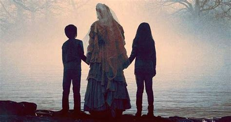

The legend of La Llorona (pronounced “LAH yoh ROH nah”), Spanish for the Weeping Woman, has been a part of Hispanic culture in the Southwest since the days of the conquistadores. The tall, thin spirit is said to be blessed with natural beauty and long flowing black hair. Wearing a white gown, she roams the rivers and creeks, wailing into the night and searching for children to drag, screaming to a watery grave. No one really knows when the legend of La Llorona began or, from where it originated. Though the tales vary from source to source, the one common thread is that she is the spirit is of a doomed mother who drowned her children and now spends eternity searching for them in rivers and lakes. La Llorona, christened “Maria”, was born to a peasant family in a humble village. Her startling beauty captured the attention of both the rich and the poor men of the area. She was said to have spent her days in her humble peasant surroundings, but in the evenings, she would don her best white gown and thrill the men who admired her in the local fandangos. The young men anxiously waited for her arrival and she reveled in the attention that she received. However, La Llorona had two small sons who made it difficult for her to spend her evenings out, and often, she left them alone while she cavorted with the gentlemen during the evenings. One day the two small boys were found drowned in the river. Some say they drowned through her neglect, but others say that they may have died by her own hand.
Another legend says that La Llorona was a caring woman full of life and love, who married a wealthy man who lavished her with gifts and attention. However, after she bore him two sons, he began to change, returning to a life of womanizing and alcohol, often leaving her for months at a time. He seemingly no longer cared for the beautiful Maria, even talking about leaving her to marry a woman of his own wealthy class. When he did return home, it was only to visit his children and the devastated Maria began to feel resentment toward the boys. One evening, as Maria was strolling with her two children on a shady pathway near the river, her husband came by in a carriage with an elegant lady beside him. He stopped and spoke to his children, but ignored Maria, and then drove the carriage down the road without looking back. After seeing this Maria went into a terrible rage, and turning against her children, she seized them and threw them into the river. As they disappeared downstream, she realized what she had done and ran down the bank to save them, but it was too late. Maria broke down into inconsolable grief, running down the streets screaming and wailing.
The beautiful La Llorona mourned them day and night. During this time, she would not eat and walked along the river in her white gown searching for her boys — hoping they would come back to her. She cried endlessly as she roamed the riverbanks and her gown became soiled and torn. When she continued to refuse to eat, she grew thinner and appeared taller until she looked like a walking skeleton. Still a young woman, she finally died on the banks of the river. Not long after her death, her restless spirit began to appear, walking the banks of the Santa Fe River when darkness fell. Her weeping and wailing became a curse of the night and people began to be afraid to go out after dark. She was said to have been seen drifting between the trees along the shoreline or floating on the current with her long white gown spread out upon the waters. On many a dark night, people would see her walking along the riverbank and crying for her children. And so, they no longer spoke of her as Maria, but rather, La Llorona, the weeping woman. Children are warned not to go out in the dark, for La Llorona might snatch them, throwing them to their deaths in the flowing waters. Though the legends vary, the apparition is said to act without hesitation or mercy. The tales of her cruelty depends on the version of the legend you hear. Some say that she kills indiscriminately, taking men, women, and children — whoever is foolish enough to get close enough to her. Others say that she is very barbaric and kills only children, dragging them screaming to a watery grave. When Patricio Lugan was a boy, he and his family saw her on a creek between Mora and Guadalupita, New Mexico. As the family was sitting outside talking, they saw a tall, thin woman walking along the creek. She then seemed to float over the water, started up the hill, and vanished. However, just moments later she reappeared much closer to them and then disappeared again. The family looked for footprints and finding none, had no doubt that the woman they had seen was La Llorona. She has been seen along many rivers across the entire Southwest and the legend has become part of Hispanic culture everywhere. Part of the legend is that those who do not treat their families well will see her and she will teach them a lesson.